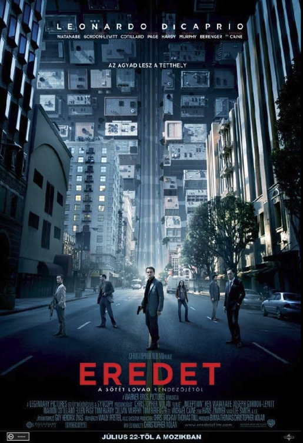
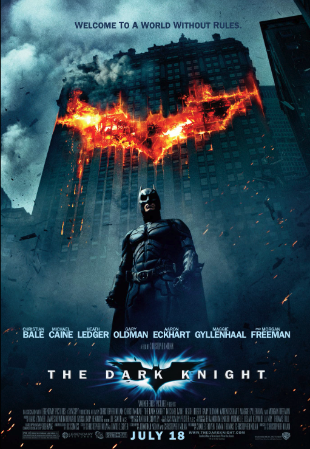
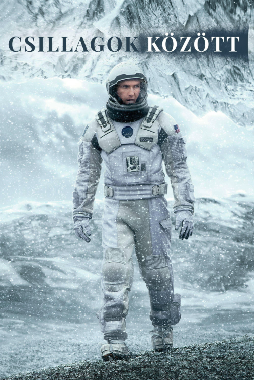

Egy észveszejtő thriller, amelyben egy ügyes tolvaj lehetőséget kap arra, hogy múltbeli bűneit megbocsássák, ha sikerül elültetnie egy gondolatot valakinek az elméjében

Batman szembenéz eddigi legnagyobb kihívásával, miközben megküzd Jokerral, a bűnöző géniusszal, aki káoszt akar teremteni Gotham Cityben.

Egy észveszejtő thriller, amelyben egy ügyes tolvaj lehetőséget kap arra, hogy múltbeli bűneit megbocsássák, ha sikerül elültetnie egy gondolatot valakinek az elméjében